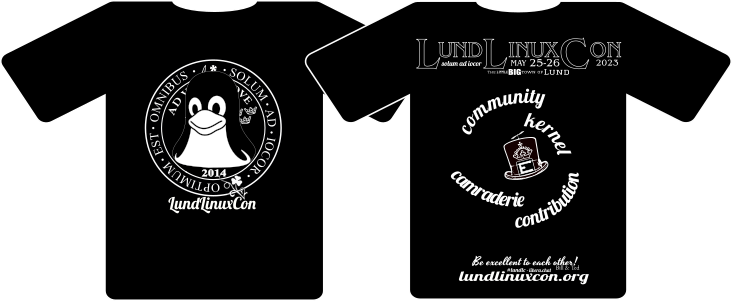
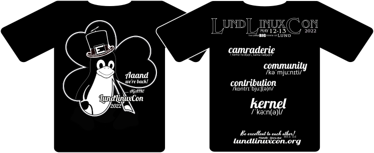

LLC 2025 has come and gone, it was great to see you all again and there is always next year!
LLC is a "half open" conference. This means that while we're formally invitation-only, it's very easy to get an invitation!
All we ask for is that you have some interest in the Linux kernel from a technical perspective.
If you would like to join the conference next year, please use this contact form with a short summary of who you are, and your relationship (if any) with the Linux kernel. Assuming everything is fine you'll get an invitation link before the next conference, please register a few months before the set date.

Frey Alfredsson - kau
Tries to add structure to chaos, atleast during our meetings!
Hans Holmberg - westerndigital
Is on a quest in the blocklayer when he's not teaching about the linux kernel
Ian Kumlien - ericsson
We've seen him sending patches, but now he seems to have mounted lkml read-only. We are still waiting for more patches :)... oh, and the one responsible/to-blame™ for the webpage and t-shirt designs
Javier González - samsung_semi
building the Open-Channel SSD ecosystem on Linux. Main developer of LightNVM's open source Flash Translation Layer (pblk). Interested in NAND and next generation non-volatile memories
Jesper Nilsson - axis
Long time Unix and Linux developer, maintainer of the Axis CRIS port of Linux from 2008 to it's removal in 2018. Working with Linux kernel drivers and debugging for Axis SoC
Linus Walleij - arm
We claim that it's a really interesting story
Niklas Cassel - westerndigital
Is working on getting things upstream!
Robert Fekete - volvocars
Linux promoter at Volvo Cars, previously Linux Kernel Gfx developer at Intel Open Source Technology Center, and before that driving the "Linuxification" of mobile platforms at Ericsson and ST-Ericsson from a multimedia perspective
Alumni
David Henningsson
involved in Linux audio, and formerly employed by Canonical
2025 -- Whoa! there it is!
Day one - 2025-05-27
Presenter
Presentation
Linus Walleij
Kevin Brodsky
Toke Høiland-Jørgensen
Andreas Hindborg
Configfs Rust API: Technical Deep Dive
Vitaly Vul
"Rusty" swapping optimization: profiling a zswap backend written in Rust
Yiannis Nikolakopoulos
Day two - 2025-05-28
Presenter
Presentation
Johannes Thumshirn
Bogdan Tanasa
Erik Lundh
Some odd places to find a Linux kernel - and where those rabbit holes took me
Robert Clausecker
SIMD-enhanced libc string functions: how it's done
Daniel Turull
Lightning talks:
Andy Polyakov
Kernel as an HPC bottleneck
Ian Kumlien
Robert Fekete
2024 -- Works for me!
Day one - 2024-05-23
Presenter
Presentation
Uladzislau Rezki
Reduce synchronize_rcu() latency
Damien Le Moal
NVMe PCI Endpoint Function Driver
Pankaj Raghav
A small history on Large block sizes in Linux
Daniel Gomez
eBPF in Large Block: A quick tour of the eBPF technology/ecosystem and how we use it at the block layer and filesystem levels for verification/validation
Alice Ryhl
Using Rust in the binder driver
Alvin Šipraga
Automotive Audio Bus (A2B) on Linux
Day two - 2024-05-24
Presenter
Presentation
Julia Lawall
Gustavo A. R. Silva
Naresh Mehta
ASPICE & ASILs - What is it and path forward for Linux component adoption in Automotive
Linus Walleij
Jørgen Sværke Hansen
Integrating Hardware-assisted Hot Data Detection into the Linux kernel
Lightning talks:
Andy Polyakov
Hans Holmberg
2023 -- What does this button do?
Day one - 2023-05-25
Presenter
Presentation
Björn Töpel
Kevin Brodsky
Vitaly Wool
Implementing secure boot for AOSP running U-Boot
Jørgen Hansen
Experiences with CXL on Linux
Yiannis Nikolakopoulos
Andreas Hindborg
Dennis Maisenbacher
Joakim Norell
Industrial espionage is not for fun
Hans Holmberg
The year of the Linux handheld
Day two - 2023-05-26
Presenter
Presentation
Linus Walleij
Andreas Hindborg
Krister Walfridsson
Daniel Krippner
Robert Fekete
Julia Lawall
Anders Roxell
Reproducible cross-compilation and cross-testing made easy
Karl Roos
A next generartion DPU based on OpenWRT
Ricardo Ribalda
2022 -- Are we here yet?
Day one - 2022-05-12
Presenter
Presentation
Abel Vesa
Damien Le Moal
Johannes Thumshirn
Brian "bex" Exelbierd
Ricardo Ribalda
Andreas Hindborg
Day two - 2022-05-13
Presenter
Presentation
Jesper Dangaard Brouer
Frey Alfredsson
Toke Høiland-Jørgensen
Mikael Hedegren, Robert Storlind
Andreas Elvstam, Samir Jasarevic
Philipp Ahmann
Alistair Francis
Joakim Nordell
2021 -- Noo... It's still here... :(
2019 -- Lion? Lyon?
Day one - 2019-05-09
Presenter
Presentation
Toke Høiland-Jørgensen
Uladzislau Rezki
Matthias Brugger
Andy Polyakov
It's all speculative [or on problems with speculative instruction execution in contemporary processors].
Thomas Gleixner
Mopping up kernel messes one at a time, this time: licensing
Day two - 2019-05-10
Presenter
Presentation
Jesper Dangaard Brouer
XDP As a building block for other FOSS projects
Javier González
Klaus Jensen
Daniel Baluta
Damien Le Moal
RISC-V
Matias Bjørling
ZNS - Zoned Namespaces
Lightning talks:
Hans Holmberg
Robert Fekete
A Security Gateway Based on Linux or anything else?
Abel Vesa
imx8mq: cpuidle: GIC wake_request workaround in kernel and ATF (Abel Vesa)
2018 - Ouroboros-Unicorn edition
Day one - 2018-05-03
Presenter
Presentation
Johan Hovold
Philippe Bonnet
Hans Holmberg
Martin Hell
Robert Fekete and Joakim Nordell
Security in cars
Day Two - 2018-05-04
Presenter
Presentationt
Linus Walleij
Niklas Cassel
Jesper Dangaard Brouer
Björn Töpel
Simon A. F. Lund
Octavian Purdila
2017 - Mucha edition
Day one - 2017-05-04
Presenter
Presentation
Hans Holmberg
The Open Kernel Teaching Project
David Herrmann &
Tom Gundersen
BUS1
Linus Walleij
Jesper Dangaard Brouer
Linux Kernel: eXpress Data Path (XDP) for DDoS protection
Christoffer Jerkeby
Security in DevOps
Julia Lawall
Iago Abal
Day two - 2017-05-05
Presenter
Presentation
Christoffer Dall
The design and implementation of KVM/ARM
Mian Yousaf Kaukab
openSUSE hardware enablement
Thomas Gleixner
The anatomy of Linux Realtime
David Henningsson
Robert Fekete, Gunnar Andersson
Krister Walfridsson
Lightning talks
Patrik Åberg
Rabin Vincent
2016 - Beerlin edition
Day one - 2016-05-12
Presenter
Presentation
Robert Fekete
Linus Walleij
Daniel Baluta
Mikael Persson
Patrik Jakobsson
Facetime HD driver for linux
Daniel Baluta
Linux kernel programming undergraduate course
Fredrik Hugosson
ACoC
Constatin Musca
Day two - 2016-05-13
Presenter
Presentation
Octavian Purdila
David Henningsson
DKMS - Dynamic Kenrel Module Support
Fabrizio Demaria
Security of Multipath TCP
Andy Polyakov
OpenSSL
Johan Hovold
Greybus
Matias Bjørling
Open-channel solid state drives
Daniel Baluta
Krister Walfridsson
Joakim Nordell
2015 - Leprechaun edition
Day one - 2015-05-07
Presenter
Presentation
Martina Maggio
Rabin Vincent
Robert Fekete
Linux kernel graphics, past present, and future + what did android drag in?
Kim Højgaard-Hansen
Hans Holmberg
Devicetree vs ACPI - A tale of two trees
Per Persson
Hans Holmberg & Anders Nilsson
Minnowboard MAX & Edison dev boards
Day two - 2015-05-08
Presenter
Presentation
Octavian Purdila
Joakim Bech
Mikael Lindberg
Better CPU governor joint project SONY/LU
Christoffer Jerkeby
David Henningsson
HDA-jack-retask
Julian Coccia
Javier González
2014 - kerneval edition
The first ever LLC
Day one - 2014-05-19
Presenter
Presentation
Linus Walleij
Ulf Hansson
The MMC subsystem
Hans Holmberg
Tidying a patch mountain
Julian Coccia
Day two - 2014-05-20
Presenter
Presentation
Jesper Nilsson
David Henningsson
Audio stack introduction
LLC 2025 - sponsored (at the last second) by Axis |
 |
LLC 2024 - sponsored by Volvo Cars |
 |
LLC 2023 - sponsored by Volvo Cars |
|  |
LLC 2022 - sponsored by Volvo Cars |
|  |
LLC 2019 - sponsored by Linaro |
 |
LLC 2018 - sponsored by cnexlabs |
 |
LLC 2017 - sponsored by viendi |
 |
|
 |
LLC 2015 - sponsored by Axis |
 |
LLC 2014 - sponsored by Hans |
 |
The Lund Linux Conference (LLC) is a small, technical conference with focus on serving and building the local Linux community - a chance for Linux developers to meet, learn and get to know each other.
The community now stretches beyond Lund and we have a good bunch of people from Denmark as regulars, as well as people we’ve met from all over the world.
The idea for a conference in Lund was hatched, like all good conspiracies, over beer in a dungeon, during the 2013 Embedded Linux Conference in Edinburgh. After realizing that surprisingly many people from the Lund region were regularly going to the same Linux conferences all over the world, Hans pitched the idea to the rest of the Lundensians of doing a small, yearly event in Lund. How hard could it be? We did not know how to do this, but saw no real reason why this would not work out beautifully. At least it could cut down on travelling costs.
After meeting up with some old friends at the Linaro office in Lund over glüewine and home baked cookies, the first conference crew was quickly formed with people from Linaro, Intel OTC, Axis and Ericsson, and the first conference was held in May 2014. It turned out we had a lot of kernel developers in the area, gathering 40 people at the event. Afterwards, we immediately decided to do it again, bigger and better the next year... and the rest is history :)
We still really don’t know what we’re doing, but it seems to be working. The community is growing and we now have trouble squeezing in all the awesome content we receive every year. We’re keeping true to the first guidelines we established the first year - a single-track, invite only, kernel-centric, free event focused on (technical) content over form.
Despite the small effort and budget spent on LLC, to our knowledge, it is the best and biggest (but perhaps only) Linux kernel conference in the nordic countries.
LLC code of conduct 1.0
LLC is dedicated to providing a harassment-free conference experience for everyone. We do not tolerate harassment of conference participants in any form. Conference participants violating these rules may be sanctioned or expelled from the conference at the discretion of the conference organizers.
Harassment includes, but is not limited to:
- Verbal comments that reinforce social structures of domination
- Sexual images in public spaces
- Deliberate intimidation, stalking, or following
- Harassing photography or recording
- Sustained disruption of talks or other events
- Inappropriate physical contact
- Unwelcome sexual attention
- Advocating for, or encouraging, any of the above behaviour
Enforcement
Participants asked to stop any harassing behavior are expected to comply immediately
If a participant engages in harassing behaviour, event organisers retain the right to take any actions to keep the event a welcoming environment for all participants. This includes warning the offender or expulsion from the conference.
Event organisers may take action to redress anything designed to, or with the clear impact of, disrupting the event or making the environment hostile for any participants.
We expect participants to follow these rules at all event venues and event-related social activities. We think people should follow these rules outside event activities too!
Reporting
If someone makes you or anyone else feel unsafe or unwelcome, please report it as soon as possible. Conference staff can be identified by special badges and will introduce the whole conference. Harassment and other code of conduct violations reduce the value of our event for everyone. We want you to be happy at our event. People like you make our event a better place.
You can make a report either personally or anonymously.
Anonymous Report
You can make an anonymous report using this form.
We can't follow up an anonymous report with you directly, but we will fully investigate it and take whatever action is necessary to prevent a recurrence.
Personal Report
You can make a personal report by:
When taking a personal report, our staff will ensure you are safe and cannot be overheard. They may involve other event staff to ensure your report is managed properly. Once safe, we'll ask you to tell us about what happened. This can be upsetting, but we'll handle it as respectfully as possible, and you can bring someone to support you. You won't be asked to confront anyone and we won't tell anyone who you are.
Our team will be happy to help you contact hotel/venue security, local law enforcement, local support services, provide escorts, or otherwise assist you to feel safe for the duration of the event. We value your attendance.
Be excellent to each other! /Bill&Ted
Based on this anti-harassment policy